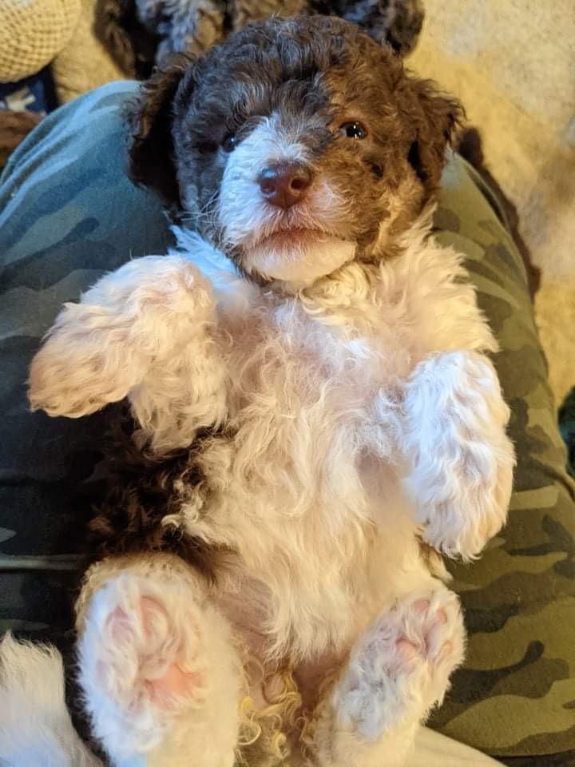
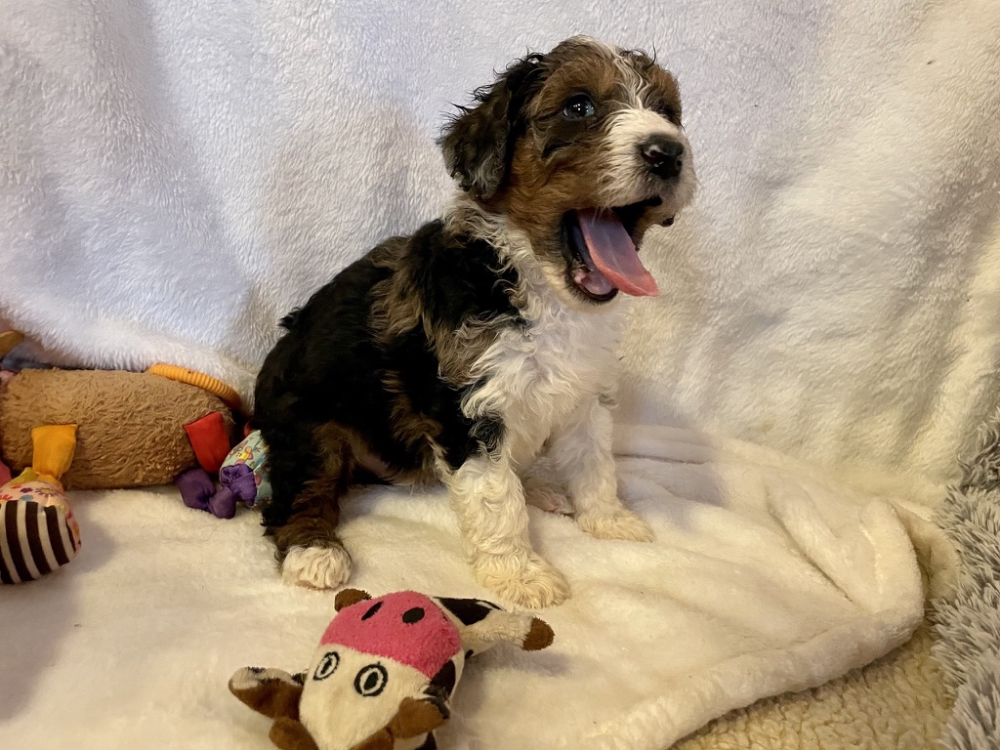
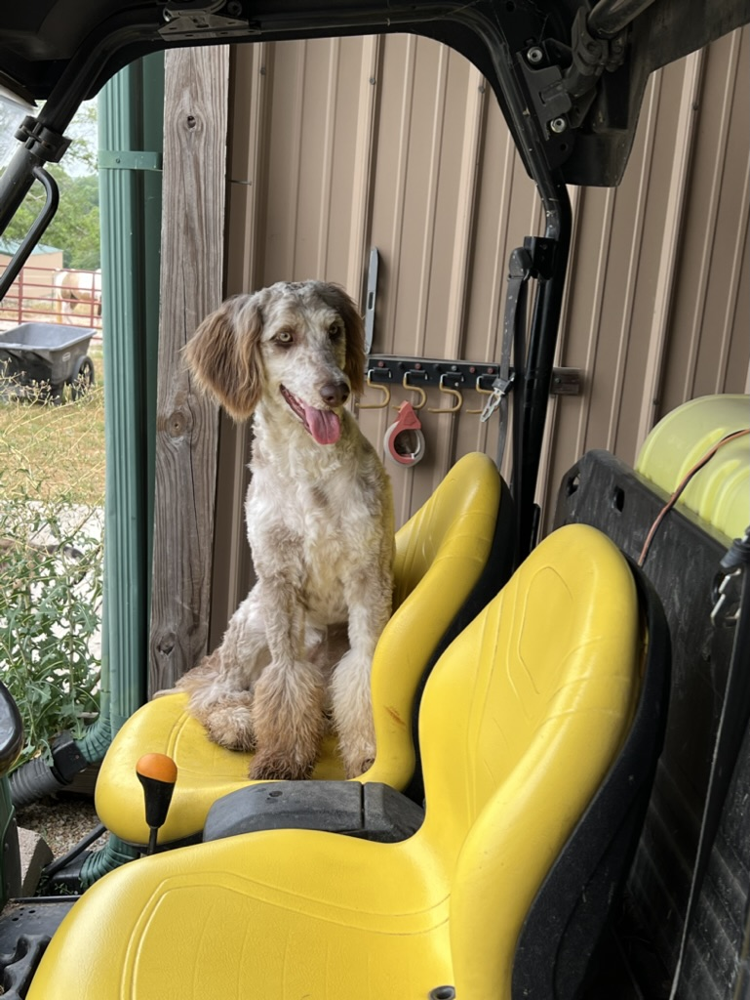
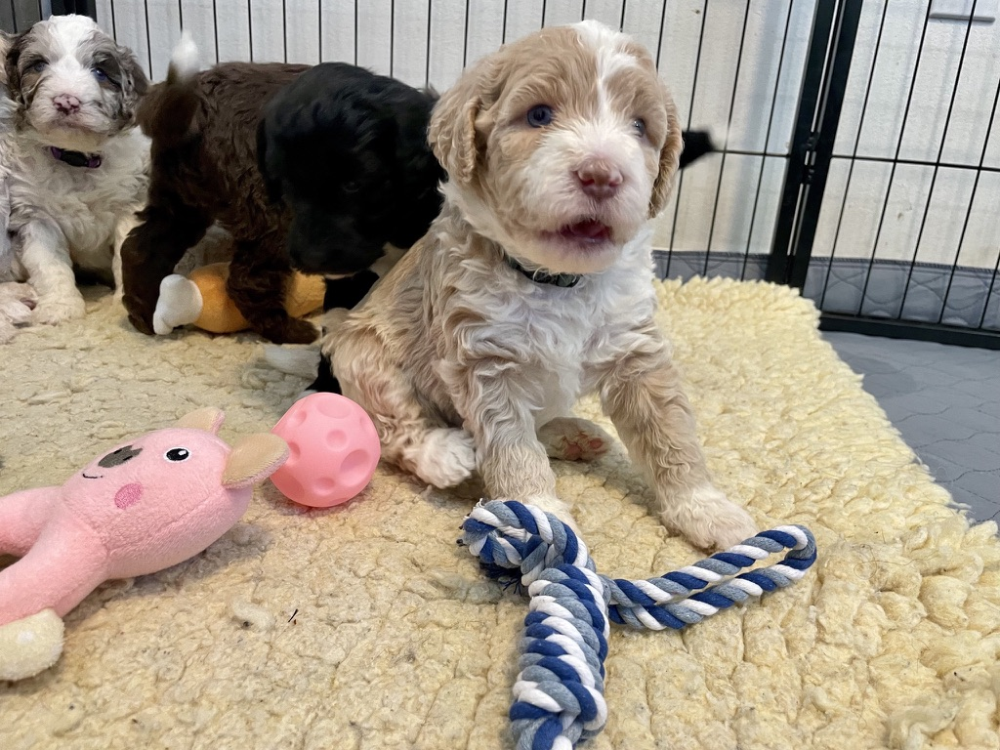
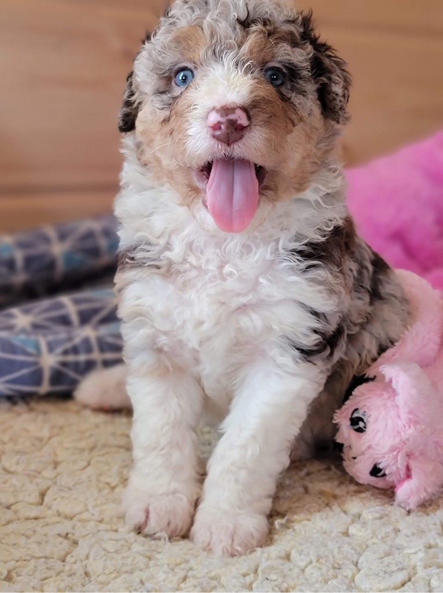

AussieDoodle Breed Info
The Aussiedoodle is a delightful hybrid breed created by crossing a Poodle with an Australian Shepherd. This charming mix combines the best traits of both parent breeds, resulting in a dog that is not only incredibly adorable but also highly intelligent and playful.
With their endearing looks, they quickly capture hearts and are often considered among the most impressive designer dogs. One of the standout features of the Aussiedoodle is their coat, which often inherits the Poodle's hypoallergenic qualities and the Australian Shepherd's striking appearance. Their coat can range from curly to wavy, and it requires regular grooming to keep it in top shape.
Beyond their looks, Aussiedoodles are known for their fantastic temperament. They are energetic, affectionate, and eager to please, making them great companions for a wide variety of families and individuals.
In addition to their appealing personality, Aussiedoodles are highly loyal and form strong bonds with their owners. This deep connection often translates into them being excellent therapy dogs. Their ability to quickly bond with people and their intuitive nature make them particularly suited for roles where emotional support and companionship are key.
Whether as a family pet or a therapy animal, the Aussiedoodle’s unique blend of qualities ensures that they are a cherished and standout companion in any setting.
